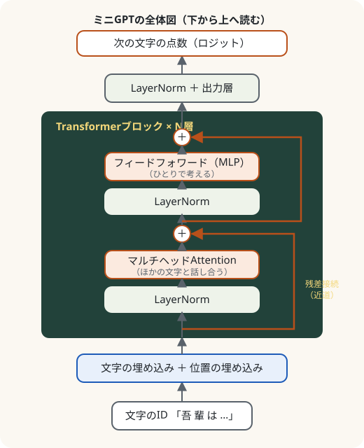

第3部 Transformerを組み立てる · 第12章
部品を組み立てる：Transformer
話し合い（Attention）と、ひとりで考える時間（MLP）を、何層も積み重ねる
おすすめは「ページを読みながら、コードを自分のノートブックに1セルずつ貼って実行」。完成ノートは困ったときの答え合わせ用です。
つくるもの
GPTそのもの。マルチヘッドAttention・フィードフォワード・残差接続・LayerNormを組み合わせたミニGPTのクラス（第13章以降で使う minigpt.py と同じコード）
身につく数学・理論
- マルチヘッドAttention（分業）
- フィードフォワード層（各位置で考える）
- 残差接続（情報と勾配の高速道路）
- Pre-LN（正規化してから処理する）
- GPTの全体構造とパラメータの内訳
- まず1バッチで過学習させるテスト
新しく使うPython・PyTorch
nn.ModuleListとnn.Sequentialtorch.catでつなげるself.applyで全部品を初期化named_parametersで中身を調べる

ミナト
Transformerって、「変形ロボット」みたいな名前ですよね。

ボンゴ先生
英語の transform は「変換する」だ。入力の文字列を、少しずつ「次の文字を当てやすい表現」に変換していく装置、という意味だよ。……まあ、合体ロボットっぽさはある。小さな部品を組み合わせて、巨大なものを作るからね。今日はキミが組み立て係だ。
準備
import re, math, urllib.request
import torch
import torch.nn as nn
import torch.nn.functional as F
def load_soseki(file_id="773_ruby_5968"):
url = ("https://raw.githubusercontent.com/aozorahack/aozorabunko_text/master/"
f"cards/000148/files/{file_id}/{file_id}.txt")
text = urllib.request.urlopen(url).read().decode("cp932")
text = text.split("-------------------------------------------------------")[2]
text = text.split("底本：")[0]
text = re.sub(r"《.*?》", "", text)
text = re.sub(r"※?［＃.*?］", "", text)
text = text.replace("｜", "").replace("\r\n", "\n")
text = re.sub(r"\n{3,}", "\n\n", text)
return text.strip()
text = load_soseki()
chars = sorted(set(text))
V = len(chars)
stoi = {ch: i for i, ch in enumerate(chars)}
itos = {i: ch for ch, i in stoi.items()}
data = torch.tensor([stoi[c] for c in text])
n = int(len(data) * 0.9)
train_data, val_data = data[:n], data[n:]
def get_batch(data, batch_size, T, g):
ix = torch.randint(0, len(data) - T, (batch_size,), generator=g)
x = torch.stack([data[i:i + T] for i in ix])
y = torch.stack([data[i + 1:i + T + 1] for i in ix])
return x, y全体図
先に完成図を見ておきましょう。下から上に、データが流れていきます。

部品は5種類だけです。
- Head（第11章で作ったAttentionヘッド）
- MultiHeadAttention：ヘッドを何個も並べたもの
- FeedForward：各位置で「考える」小さなMLP（第9章の親戚）
- Block：2と3を、LayerNormと残差接続でつないだもの
- GPT：埋め込み＋Blockを何層も＋出力層
順番に作っていきましょう。
部品1：Head（おさらい）
第11章のHeadに、ドロップアウト（第10章）を1行足しただけです。
class Head(nn.Module):
"""Attentionヘッド1つ（第11章）"""
def __init__(self, n_embd, head_size, block_size, dropout):
super().__init__()
self.key = nn.Linear(n_embd, head_size, bias=False)
self.query = nn.Linear(n_embd, head_size, bias=False)
self.value = nn.Linear(n_embd, head_size, bias=False)
self.register_buffer("tril", torch.tril(torch.ones(block_size, block_size)))
self.dropout = nn.Dropout(dropout)
def forward(self, x):
B, T, C = x.shape
k, q, v = self.key(x), self.query(x), self.value(x)
scores = q @ k.transpose(-2, -1) / math.sqrt(k.shape[-1])
scores = scores.masked_fill(self.tril[:T, :T] == 0, float("-inf"))
self.wei = F.softmax(scores, dim=-1)
return self.dropout(self.wei) @ v部品2：マルチヘッドAttention
class MultiHeadAttention(nn.Module):
"""ヘッドを何個も並べて、結果をつなげる"""
def __init__(self, n_embd, n_head, block_size, dropout):
super().__init__()
head_size = n_embd // n_head
self.heads = nn.ModuleList([Head(n_embd, head_size, block_size, dropout) for _ in range(n_head)])
self.proj = nn.Linear(n_embd, n_embd)
self.dropout = nn.Dropout(dropout)
def forward(self, x):
out = torch.cat([h(x) for h in self.heads], dim=-1)
return self.dropout(self.proj(out))
mha = MultiHeadAttention(n_embd=64, n_head=4, block_size=8, dropout=0.0)
x = torch.randn(2, 8, 64)
print(mha(x).shape)torch.Size([2, 8, 64])基礎の補足マルチヘッドAttentionの形トレースと「なぜ分業が得なのか？」
n_embd = 64、n_head = 4（つまり head_size = 64 // 4 = 16）のとき、テンソルの形は次のように流れて元に戻ります。
| ステップ | テンソルの形 | 何をしているか |
|---|---|---|
入力 x | [B, T, 64] | 元の埋め込みベクトル（n_embd = 64） |
各ヘッド h(x) × 4個 | [B, T, 16] が 4本 | 4つのヘッドが独立に「別の観点」で過去から情報を集める（hs = 16） |
torch.cat(..., dim=-1) | [B, T, 64] | 4本の [B, T, 16] を最後の軸で横につなぎ、4 × 16 = 64 に戻す |
self.proj(out) | [B, T, 64] | 全結合層で4つのヘッドの見方を混ぜ合わせて残差ストリームへ返す |
しかも嬉しいことに、1つの大きいヘッド（head_size = 64）を4つの小さいヘッド（head_size = 16 × 4）に分けても、Q・K・V のパラメータ合計は で1個も増えません。同じパラメータ予算のまま、複数の注目パターン（直前の文字、主語、括弧の対応など）を同時並行で追えるのがマルチヘッドの強みです。なお、最後に元の n_embd へ戻すため、必ず n_embd % n_head == 0（割り切れる設定）にします。
部品3：フィードフォワード（考える時間）
class FeedForward(nn.Module):
"""各位置で、ひとりで「考える」MLP"""
def __init__(self, n_embd, dropout):
super().__init__()
self.net = nn.Sequential(
nn.Linear(n_embd, 4 * n_embd),
nn.GELU(),
nn.Linear(4 * n_embd, n_embd),
nn.Dropout(dropout),
)
def forward(self, x):
return self.net(x)基礎の補足FFNの4倍拡張：形トレースとパラメータ数
n_embd を とすると、FeedForward の内部ではテンソルの形がいったん 4倍 に広がってから元に戻ります。
- 入力：
[B, T, C] - 1層目
Linear(C, 4C)＋GELU：[B, T, 4C]（パラメータ数：） - 2層目
Linear(4C, C)＋Dropout：[B, T, C]（パラメータ数：）
合計は 個です。実は、1つの Block 全体のパラメータ（約 ）のうち 約 2/3 がこの FeedForward 層にあります（Multi-Head Attention は約 ＝約 1/3）。広い作業机（）に大量の重みを置いて、話し合いで集めた文脈を各位置でしっかり加工・記憶しているのです。
部品4：Block（残差接続とLayerNorm）
class Block(nn.Module):
"""Transformerブロック：話し合い（Attention）→ 考える（FeedForward）"""
def __init__(self, n_embd, n_head, block_size, dropout):
super().__init__()
self.ln1 = nn.LayerNorm(n_embd)
self.attn = MultiHeadAttention(n_embd, n_head, block_size, dropout)
self.ln2 = nn.LayerNorm(n_embd)
self.ffwd = FeedForward(n_embd, dropout)
def forward(self, x):
x = x + self.attn(self.ln1(x))
x = x + self.ffwd(self.ln2(x))
return xたった2行の forward ですが、ここにTransformerの設計の知恵が詰まっています。
基礎の補足残差接続の「勾配の高速道路」と Pre-Norm vs Post-Norm
① なぜ x + sublayer(ln(x)) で勾配が消えないのか？ 残差接続の式 を で微分すると、足し算の微分ルールから次の式になります。
もし残差接続がない（）と、層を 回さかのぼるたびに微分の掛け算 が起き、各層が なら 20 層で に消えてしまいます（勾配消失）。一方、残差接続があれば必ず + 1 の直通ルートが残るため、たとえ が小さくても、勾配が減衰せず入口までまっすぐ届きます。
② Pre-Norm と Post-Norm の比較
| 方式 | コードの形 | 特徴 |
|---|---|---|
| Pre-Norm（GPT-2以降の主流） | x = x + sublayer(ln(x)) | 幹線道路 x に LayerNorm が挟まらず純粋な足し算を保てる。深い層でも学習が安定（最後に ln_f を1回入れる） |
| Post-Norm（2017年元祖Transformer） | x = ln(x + sublayer(x)) | 毎層、幹線道路 x 自体が正規化を通るため、層を深くすると勾配が不安定になりやすい |
部品5：GPT（全体）
最後に、全部をつなげます。
class GPT(nn.Module):
def __init__(self, vocab_size, block_size=128, n_embd=128, n_head=4, n_layer=4, dropout=0.1):
super().__init__()
self.block_size = block_size
self.tok_emb = nn.Embedding(vocab_size, n_embd)
self.pos_emb = nn.Embedding(block_size, n_embd)
self.drop = nn.Dropout(dropout)
self.blocks = nn.Sequential(*[Block(n_embd, n_head, block_size, dropout) for _ in range(n_layer)])
self.ln_f = nn.LayerNorm(n_embd)
self.lm_head = nn.Linear(n_embd, vocab_size)
self.apply(self._init_weights)
def _init_weights(self, module):
if isinstance(module, (nn.Linear, nn.Embedding)):
nn.init.normal_(module.weight, mean=0.0, std=0.02)
if isinstance(module, nn.Linear) and module.bias is not None:
nn.init.zeros_(module.bias)
def forward(self, idx, targets=None):
B, T = idx.shape
pos = torch.arange(T, device=idx.device)
x = self.drop(self.tok_emb(idx) + self.pos_emb(pos))
x = self.blocks(x)
logits = self.lm_head(self.ln_f(x))
loss = None
if targets is not None:
loss = F.cross_entropy(logits.view(B * T, -1), targets.view(B * T))
return logits, loss
@torch.no_grad()
def generate(self, idx, max_new_tokens, temperature=1.0, top_k=None):
for _ in range(max_new_tokens):
idx_cond = idx[:, -self.block_size:] # 窓に入る分だけ
logits, _ = self(idx_cond)
logits = logits[:, -1, :] / temperature # 最後の位置の点数
if top_k is not None:
v, _ = torch.topk(logits, min(top_k, logits.size(-1)))
logits[logits < v[:, [-1]]] = -float("inf")
probs = F.softmax(logits, dim=-1)
next_id = torch.multinomial(probs, num_samples=1)
idx = torch.cat([idx, next_id], dim=1)
return idx動かしてみる
CPUでも動く小さめの設定で、GPTを作ってみましょう。
torch.manual_seed(0)
model = GPT(V, block_size=64, n_embd=64, n_head=4, n_layer=2, dropout=0.0)
total = sum(p.numel() for p in model.parameters())
print(f"パラメータの数：{total:,}")
groups = {"埋め込み（文字・位置）": 0, "Transformerブロック": 0, "最後のLayerNorm＋出力層": 0}
for name, p in model.named_parameters():
if name.startswith(("tok_emb", "pos_emb")):
groups["埋め込み（文字・位置）"] += p.numel()
elif name.startswith("blocks"):
groups["Transformerブロック"] += p.numel()
else:
groups["最後のLayerNorm＋出力層"] += p.numel()
for k, v in groups.items():
print(f" {k}：{v:,}（{v / total:.0%}）") # :, は3桁ごとのカンマ、:.0% はパーセント表示パラメータの数：369,677
埋め込み（文字・位置）：136,000（37%）
Transformerブロック：99,584（27%）
最後のLayerNorm＋出力層：134,093（36%）まだ小さなモデルなので、語彙（2061文字）に関わる埋め込みと出力層がパラメータの大半を占めています。Blockを増やしたり、n_embd を大きくしたりすると、Transformerブロックの割合が増えていきます。
第10章の診察その1、「最初の損失を見る」もやっておきましょう。
g = torch.Generator().manual_seed(0)
x, y = get_batch(train_data, 8, 64, g)
_, loss = model(x, y)
print("最初の損失：", round(loss.item(), 3), " log V：", round(math.log(V), 3))最初の損失： 7.656 log V： 7.631とほぼ一致。初期化は健康です。
基礎の補足GPTのパラメータ数を手で検算する公式
上の実測値 369,677 は、語彙数 ・窓幅 ・埋め込み次元 ・層数 から 1個の狂いもなく 手で検算できます。
| グループ | 部品の内訳 | 公式 | V=2061, T=64, C=64, L=2 の値 |
|---|---|---|---|
| 埋め込み | tok_emb () ＋ pos_emb () | ||
| Transformerブロック（1層分） | ln1,ln2 () ＋ attn () ＋ ffwd () | ||
| ブロック全体（ 層分） | 上の1層分 × | ||
| 最終LayerNorm＋出力層 | ln_f () ＋ lm_head () | ||
| 合計 | — | — | 369,677（実測と完全一致！） |
下の確認問題で、この計算と Block 内のテンソル shape トレースを純Pythonで自力実装してみましょう！
1バッチで丸暗記させるテスト
第10章で紹介した研究者の口ぐせ「まず小さなデータで過学習させてみよ」を実行します。同じ1バッチだけを300回学習させて、丸暗記できるか試します。
torch.manual_seed(0)
model = GPT(V, block_size=64, n_embd=64, n_head=4, n_layer=2, dropout=0.0)
opt = torch.optim.AdamW(model.parameters(), lr=3e-3)
x, y = get_batch(train_data, 8, 64, torch.Generator().manual_seed(0)) # この1バッチだけ
for step in range(301):
_, loss = model(x, y)
opt.zero_grad()
loss.backward()
opt.step()
if step % 100 == 0:
print(f"ステップ {step}：損失 {loss.item():.3f}")ステップ 0：損失 7.656
ステップ 100：損失 0.025
ステップ 200：損失 0.012
ステップ 300：損失 0.009損失がほぼ0になりました。モデルは、このバッチの文章を完全に丸暗記しました。丸暗記ができる＝モデルと学習ループにバグがない、ことの確認です。もし下がらなかったら、どこかの部品のつなぎ方を間違えています（ModuleList を普通のリストにしてしまった、など）。
基礎の補足なぜ「1バッチ丸暗記テスト」がML研究最強のデバッグ技なのか？
深層学習のコードは、バグがあってもエラーを出さずにそれっぽく動き続けてしまうことがよくあります（サイレントバグ）。数時間GPUを回したあとに「損失が下がらない！ 実は nn.ModuleList ではなく普通のリストだった」と気づくのは最悪のパターンです。
そこで研究者は、本学習の前に必ず次の 1バッチ丸暗記テスト（overfit-one-batch sanity test） を数秒だけ走らせます。
dropout = 0.0にする（過学習を邪魔するブレーキを外す）- 固定の1バッチ
(x, y)だけを何百回も繰り返して学習させる - 損失がほぼ 0（
0.01未満）まで下がるか確認する
もし下がらなければ、順伝播・正解のずらし方・ModuleList 登録・opt.zero_grad()・学習率のどこかに必ずバグがあります。逆にほぼ 0 まで落ちれば「少なくとも学習の配線は100%正常」と安心して本学習へ進めます。
『こころ』で少しだけ学習させる
本格的な学習は第13章でGPUを使ってやります。ここでは、CPUで1500ステップだけ学習させて、ちゃんと学べることを確かめます。
@torch.no_grad()
def val_loss(model, T):
model.eval()
starts = range(0, len(val_data) - T - 1, T)
xs = torch.stack([val_data[i:i + T] for i in starts])
ys = torch.stack([val_data[i + 1:i + T + 1] for i in starts])
loss = model(xs, ys)[1].item()
model.train()
return loss
torch.manual_seed(0)
g = torch.Generator().manual_seed(0)
model = GPT(V, block_size=64, n_embd=64, n_head=4, n_layer=2, dropout=0.1)
opt = torch.optim.AdamW(model.parameters(), lr=3e-3)
for step in range(1501):
x, y = get_batch(train_data, 32, 64, g)
_, loss = model(x, y)
opt.zero_grad()
loss.backward()
opt.step()
if step % 500 == 0:
print(f"ステップ {step:4d}：訓練 {loss.item():.3f} 検証 {val_loss(model, 64):.3f}")ステップ 0：訓練 7.646 検証 7.495
ステップ 500：訓練 3.092 検証 3.316
ステップ 1000：訓練 3.041 検証 3.148
ステップ 1500：訓練 2.741 検証 3.0971500ステップ、たった37万個のパラメータで、第11章の1ヘッドモデル（28万個、2000ステップで3.31）より良い検証損失になりました。まだ下がり続けています。続きは、第13章でGPUを使って思う存分やりましょう。
model.eval()
torch.manual_seed(0)
start = torch.tensor([[stoi[c] for c in "私はその人を"]])
out = model.generate(start, max_new_tokens=80, temperature=0.8)
print("".join(itos[i] for i in out[0].tolist()))私はその人を選んな一人の間に見て、今、念とうとうところでした。私は一種を語る時々らなくなった。父はまた私を欺くより返して来た。私に告げた一人にする親類を利き事があった。このこのコードの行き先
この章で書いた5つのクラス（Head、MultiHeadAttention、FeedForward、Block、GPT）は、教科書のリポジトリに code/minigpt.py として、まったく同じ内容で置いてあります。第13章からは、毎回このファイルをダウンロードして使います。あなたが書いたものと同じものです。自信を持って import してください。
もっと深く本物のGPT-2との違い
この章のGPTと、OpenAIが2019年に公開したGPT-2の構造は、ほとんど同じです。違いは主に次の3つで、第15章で本物のGPT-2の重みを読み込むときに、ここを合わせます。
- GPT-2は、Q・K・Vを作る3つの全結合層を1つにまとめている（計算が速い）。数学的には同じ
- GPT-2は、Q・K・Vの全結合層にもバイアスがある
- GPT-2は、出力層の重みを文字の埋め込みの表と共有している（weight tying。パラメータの節約）
大きさは、GPT-2の一番小さい版で12層・12ヘッド・768次元、約1億2400万パラメータです。
できたらチェック
ボンゴ先生
組み立て完了！ キミのGPTは、まだCPUで少し走っただけの子馬だ。次の章では、GPUという牧場で、漱石の小説を100万字読ませて、思い切り走らせる。どこまで速くなるか、楽しみだね。
説明の読了チェックです（ブラウザ内にのみ保存）。「理解・定着」は途中の確認問題・自力実装・間隔復習の結果と合わせて記録されます。